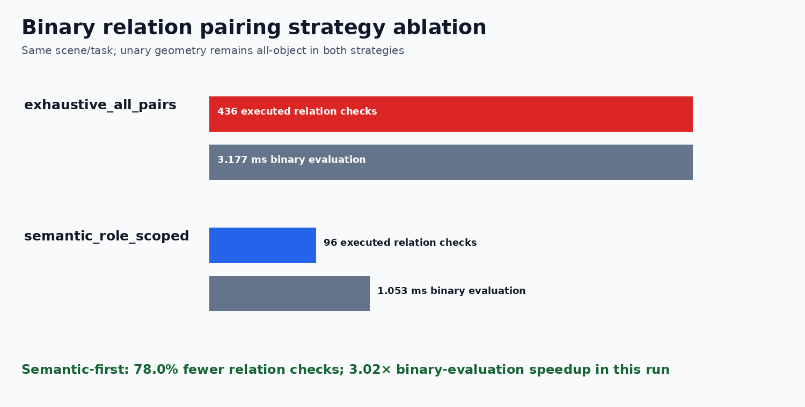

Both strategies compute unary geometry and semantic role compatibility for every observed object. Exhaustive evaluates every directional relation pair. Semantic-first evaluates only pairs whose subject and object have reliable semantic support for the roles declared by that relation.
This measures the cached binary relation-evaluation portion, not RGB detection, point-cloud reconstruction, or unary property extraction.

| Stage | Region | Objects | Exhaustive checks | Semantic-first checks | Pruned | Exhaustive ms | Semantic-first ms |
|---|---|---|---|---|---|---|---|
| 000 | INITIAL | 8 | 112 | 24 | 88 | 0.793 | 0.270 |
| 001 | D1 | 9 | 144 | 32 | 112 | 1.128 | 0.352 |
| 002 | D2 | 10 | 180 | 40 | 140 | 1.257 | 0.430 |